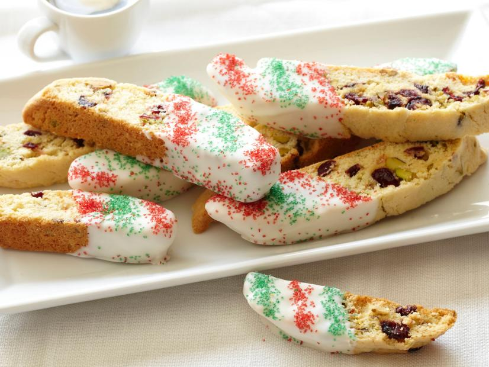

Biscotti Recipe

Description
An absolute classic come the Holiday season
Ingrediants
- 2 cups all-purpose flour
- 1 1/2 teaspoons baking powder
- 3/4 cup sugar
- 1/2 cup (1 stick) unsalted butter, room temperature
- 1 teaspoon grated lemon zest
- 1/4 teaspoon salt
- 2 large eggs
- 3/4 cup pistachios, coarsely chopped
- 2/3 cup dried cranberries
- 12 ounces good-quality white chocolate, chopped
- Red and green sugar crystals, for garnish
Steps
- Preheat the oven to 350 degrees F.
- Line a heavy large baking sheet with parchment paper. Whisk the flour and baking powder in a medium bowl to blend. Using an electric mixer, beat the sugar, butter, lemon zest, and salt in a large bowl to blend. Beat in the eggs 1 at a time. Add the flour mixture and beat just until blended. Stir in the pistachios and cranberries.
- Form the dough into a 13-inch long, 3-inch wide log on the prepared baking sheet. Bake until light golden, about 40 minutes. Cool for 30 minutes.
- Place the log on the cutting board. Using a sharp serrated knife, cut the log on a diagonal into 1/2 to 3/4-inch-thick slices. Arrange the biscotti, cut side down, on the baking sheet. Bake the biscotti until they are pale golden, about 15 minutes. Transfer the biscotti to a rack and cool completely.
- Stir the chocolate in a bowl set over a saucepan of simmering water until the chocolate melts. Dip half of the biscotti into the melted chocolate. Gently shake off the excess chocolate. Place the biscotti on the baking sheet for the chocolate to set. Sprinkle with the sugar crystals. Refrigerate until the chocolate is firm, about 35 minutes.
- The biscotti can be made ahead. Store them in an airtight container up to 4 days, or wrap them in foil and freeze in resealable plastic bags up to 3 weeks.
Return to Main